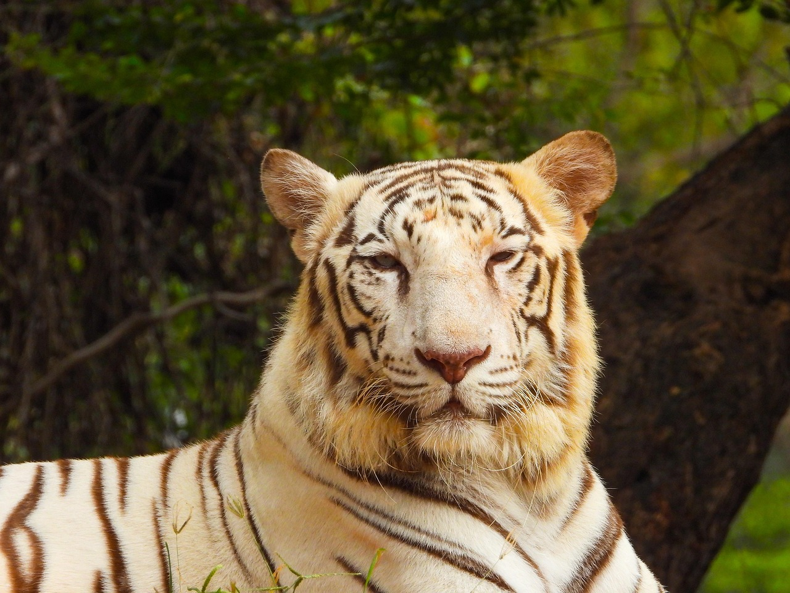

Artificial intelligence (AI) is the capability of computational systems to perform tasks typically associated with human intelligence, such as learning, reasoning, problem-solving, perception, and decision-making. It is a field of research in computer science that develops and studies methods and software that enable machines to perceive their environment
Wild Animal :
Throughout the tiger's range, it inhabits mainly forests, from coniferous and temperate broadleaf and mixed forests in the Russian Far East and Northeast China to tropical and subtropical moist broadleaf forests on the Indian subcontinent and Southeast Asia. The tiger is an apex predator and preys mainly on ungulates, which it takes by ambush. It lives a mostly solitary life and occupies home ranges, defending these from individuals of the same sex. The range of a male tiger overlaps with that of multiple females with whom he mates. Females give birth to usually two or three cubs that stay with their mother for about two years. When becoming independent, they leave their mother's home range and establish their own.